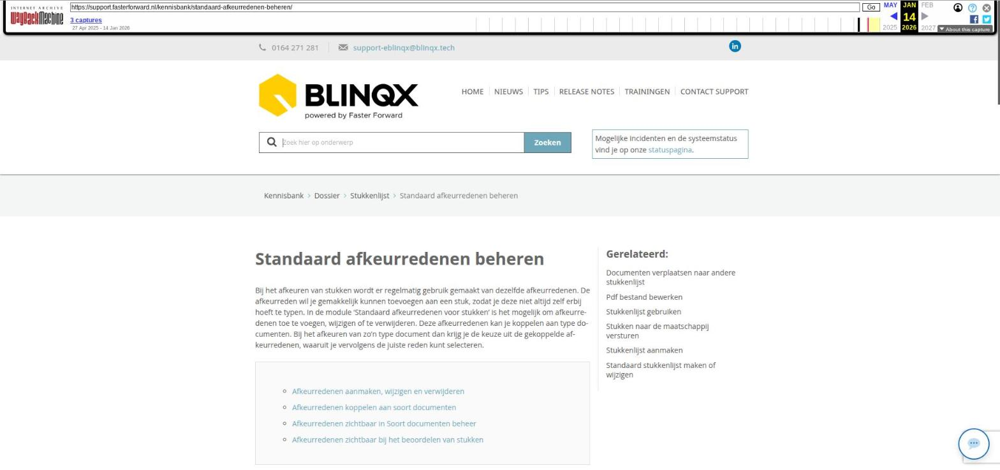

Standaard afkeurredenen beheren

Tekstinhoud
Standaard afkeurredenen beheren
Bij het afkeuren van stukken wordt er regelmatig gebruik gemaakt van dezelfde afkeurredenen. De afkeurreden wil je gemakkelijk kunnen toevoegen aan een stuk, zodat je deze niet altijd zelf erbij hoeft te typen. In de module 'Standaard afkeurredenen voor stukken' is het mogelijk om afkeurredenen toe te voegen, wijzigen of te verwijderen. Deze afkeurredenen kan je koppelen aan type documenten. Bij het afkeuren van zo'n type document dan krijg je de keuze uit de gekoppelde afkeurredenen, waaruit je vervolgens de juiste reden kunt selecteren.
Afkeurredenen aanmaken, wijzigen en verwijderen
Afkeurredenen koppelen aan soort documenten
Afkeurredenen zichtbaar in Soort documenten beheer
Afkeurredenen zichtbaar bij het beoordelen van stukken
Afkeurredenen aanmaken, wijzigen en verwijderen
Je gaat naar de module via Beheer – Documenten – Standaard afkeurreden voor stukken. In de module kan je de afkeurredenen toevoegen. Dit via de knop 'Toevoegen'.
Bij het aanmaken geef de afkeurreden een naam en een omschrijving. De naam is voor eigen herkenbaarheid. De omschrijving wordt verzonden als toelichting in het DA-bericht. Ook moet je de afkeurreden koppelen aan soort documenten. Je bepaalt zelf aan welk soort document je de afkeurreden wilt koppelen. Deze afkeurreden is dan te selecteren bij stukken die gekoppeld aan dit type soort document.
De toelichting van de afkeurreden mag maximaal 450 karakters lang zijn.
Middels het wijzigingsicoon kan je de afkeurreden wijzigen en door middel van het kruisje deze verwijderen. De afkeurreden kan niet verwijderd worden, wanneer deze is gekoppeld aan een soort document.
Afkeurredenen koppelen aan soort documenten
Wanneer je een nieuwe afkeurreden aanmaakt of wanneer je een bestaande wijzigt dan moet je de afkeurreden koppelen aan soort documenten. Na het klikken op het groene plusicoon of wijzigingsicoon zie je links de beschikbare soort documenten staan. De soort documenten kan je aan de afkeurreden koppelen door ze te selecteren en vervolgens te klikken op 'Kies selectie'. Ten slotte klik je op 'Opslaan'.
De soort documenten die al gekoppeld zijn, zie je rechts staan. De soort documenten kan je ontkoppelen door middel van het rode kruisje.
Let op: het stuk is gekoppeld aan een soort document. Is de afkeurreden niet aan dit soort document gekoppeld dan is het niet mogelijk om deze te selecteren voor dat stuk.
Afkeurredenen zichtbaar in Soort documenten beheer
Alle soort documenten zijn terug te vinden in Beheer – Soort documenten beheer. Hier is per soort document zichtbaar welke afkeurredenen aan het soort document gekoppeld zijn. Middels het rode kruisje kan je de afkeurredenen ontkoppelen van het soort document.
Afkeurredenen zichtbaar bij het beoordelen van stukken
In de stukkenlijst staan de stukken die je gaat beoordelen. Aan deze stukken zijn documenten gekoppeld die horen bij een soort document. Wanneer je een stuk afkeurt dan komen de afkeurredenen zichtbaar die zijn gekoppeld aan het soort document waaronder het beoordeelde document valt. De intermediair levert bijvoorbeeld het identiteitsbewijs aan. Deze hoort bij het soort document Identiteitsbewijs 1e aanvrager. Wanneer je het stuk afgekeurd komen de afkeurredenen zichtbaar dit zijn gekoppeld aan het soort document Identiteitsbewijs 1e aanvrager. Je kan vervolgens de gewenste afkeurreden selecteren.
Laatste update: 7 januari 2025
Was deze informatie nuttig?
Ja Nee